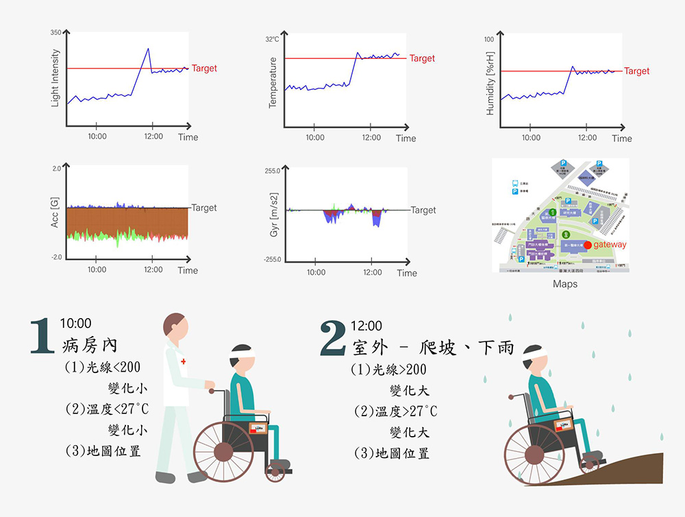
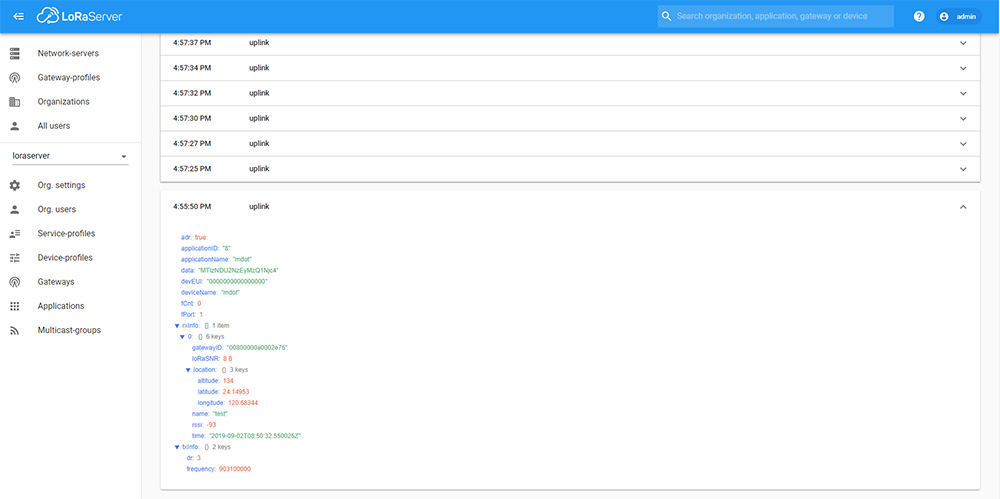
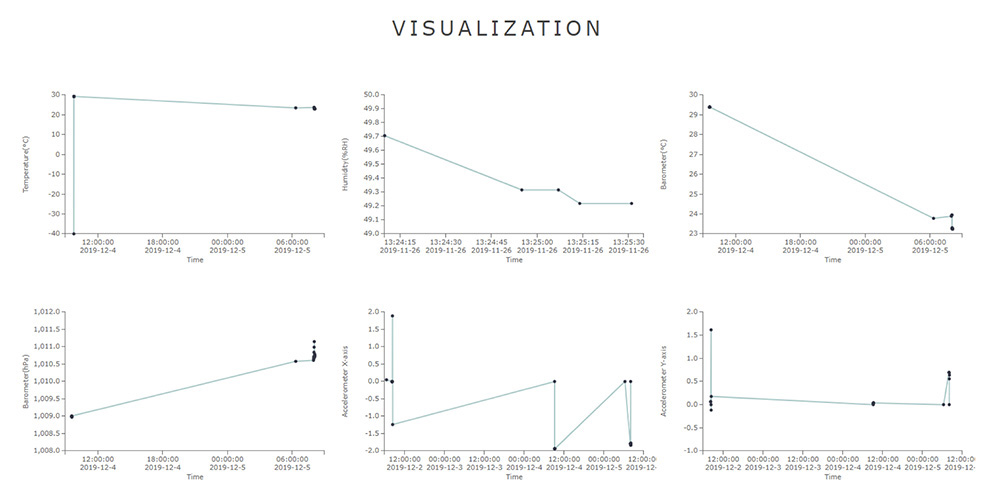

MY WORKS
LoRa

行 動 輔 具 故 障 診 斷 平 台
以LoRa為基礎的行動醫療輔具故障診斷系統
Programming Language :
專案介紹
本系統以LoRa無線傳輸技術為基礎，將行動醫療輔具所感測的巨量資料進行分類訓練，包含使用環境、位置、路徑追蹤等，將訓練完成的模型存放至樹莓派中，以透過樹莓派即時辨識目前行動輔具的狀態。
並利用LoRa無線網路架構進行資料傳輸整合後，使用RSSI三邊定位法追蹤行動輔具目前的位置，採用D3.js進行資料視覺化將辨識結果呈現於架設的平台中，以提供醫務管理者故障診斷與佈署之參考。
實際結果
行動輔具故障診斷情境圖
LoRa App Server接收數據封包
網頁平台呈現數據分析結果
